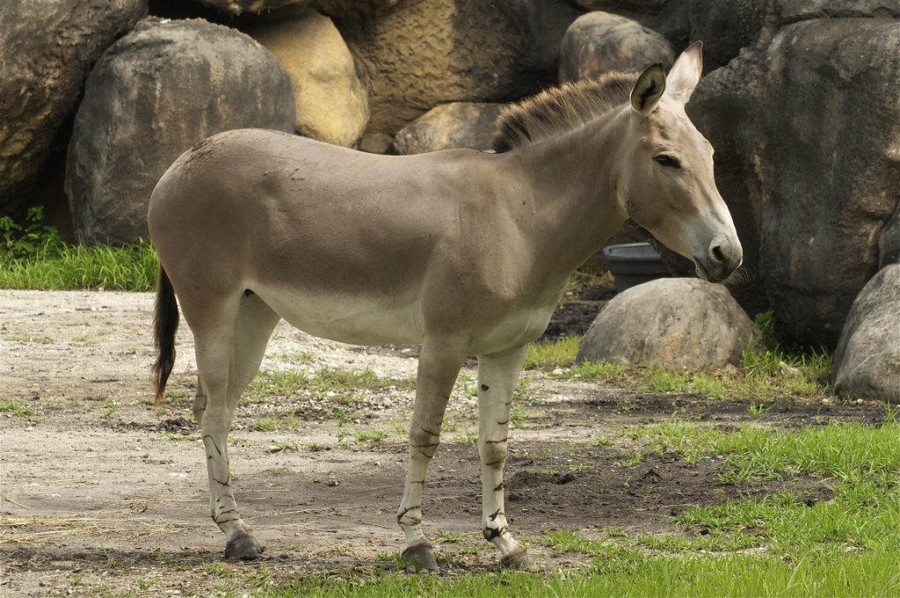
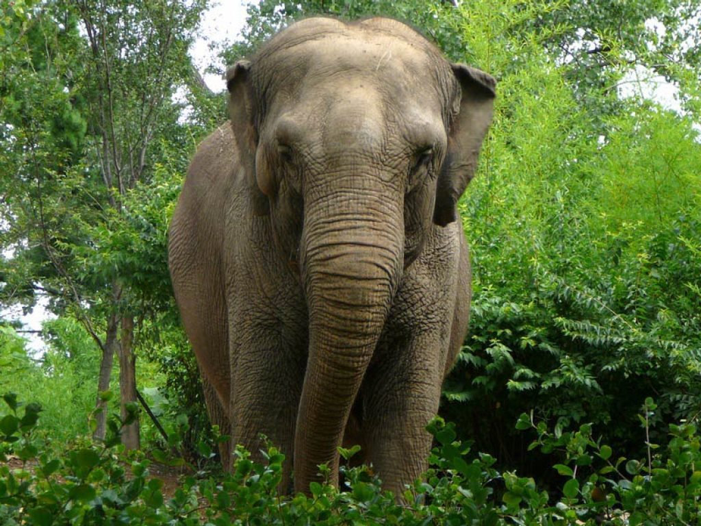
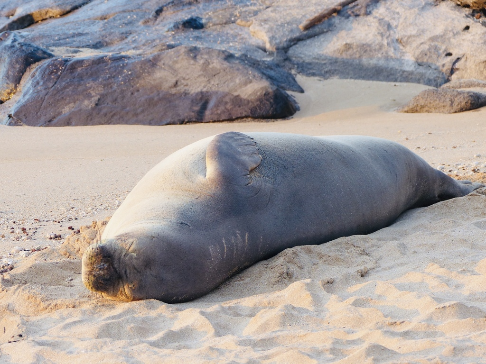
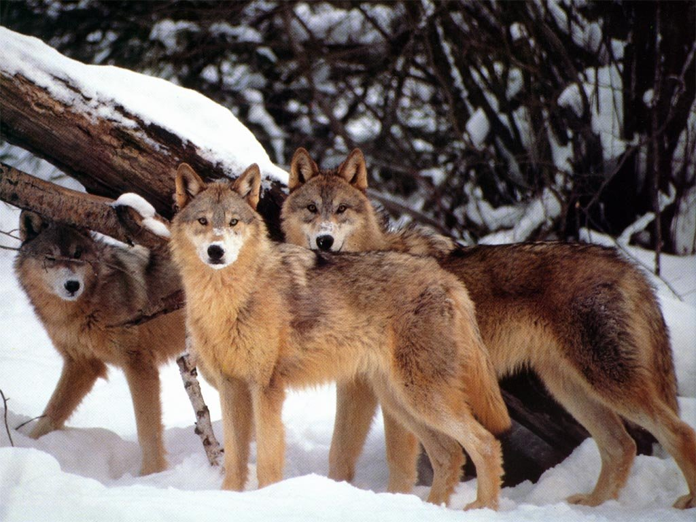

Home
Asno Selvagem Africano
Foca do monge do Hawai
Lobo Vermelho
Elefante Asiático
Formulário




Alguns websites de interesse
Toda Matéria animais vias de extinção no Brasil
WWF animais em vias extinção em Portugal
Publico estudo sobre animais em vias de extinção
Download de informação sobre os animais